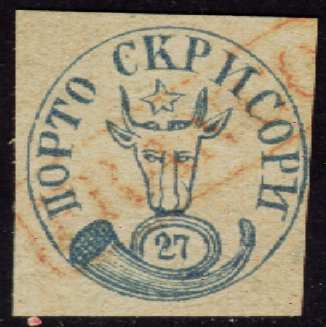
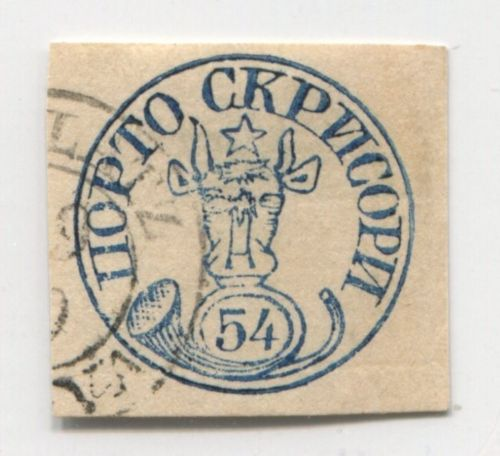
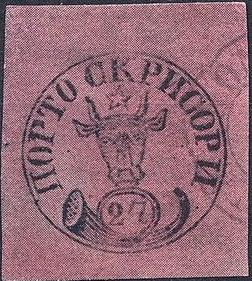
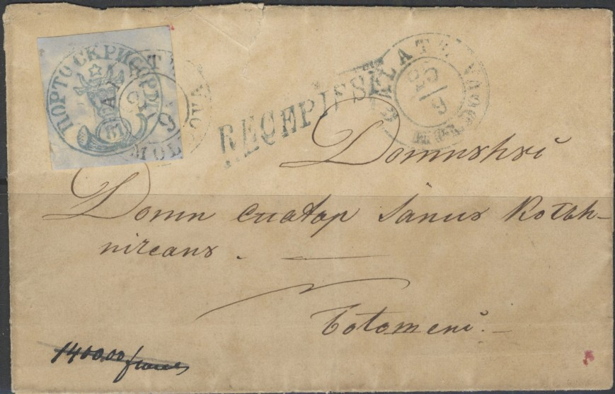
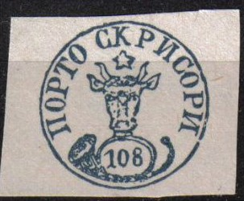
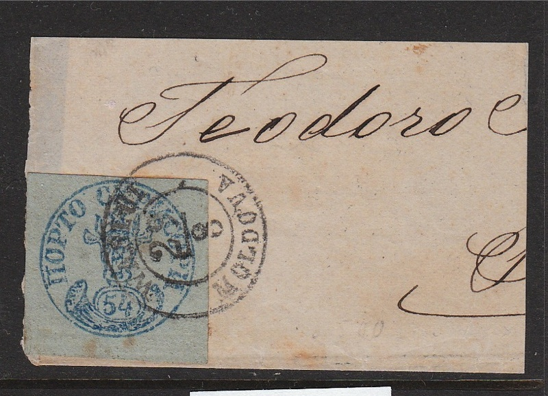
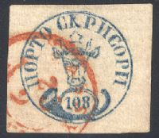
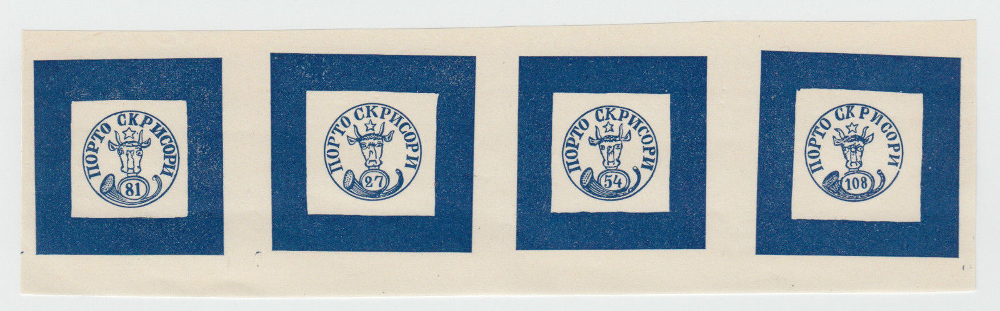

ROMANIA (Moldova - Wallachia)
First issue, forgeries, part 2
Return To Catalogue -
Rumania 1858 first issue, forgeries, part
1 - Rumania 1858 first issue - Cancels on the first issues
Note: on my website many of the
pictures can not be seen! They are of course present in the
catalogue;
contact me if you want to purchase it:
For more forgeries: Rumania 1858 first
issue, forgeries, part 1.


Forgeries of the 27 p value, made by the same forger. The
posthorn touches the circular frame line below it. I've seen such
a forgery in blue sold as genuine on an Internet auction. I've
also seen an orange 27 p stamp in this design (again with a red
boxed "FRANCO" cancel'). It also exists with a red
"FRANCO JASSY" elliptic cancel. The last letter is
rather badly done (the "N" like character in
"SKRISORI"). Next to it the same forgery and a forged
81 pa value on a piece of a letter. The 27 pa forgery is clearly
based on an illustration of a Schaubek album (or the other way
around?).
A forgery of the 81 p with very small ears. Also note the empty
space at the bottom of the posthorn with two dots inside. It
(always?) seems to be cancelled with part of a large circle. Also
a 108 pa forgery, possibly made by the same forger?

Oneglia(?) forgeries; note the very big ears.
Forgeries, all made by the same forger. Often appearing with the
cancels "GALATZ 1/10 MOLDAVA" or "BOTUSCHANI 28/?
MOLDOVA"
I've seen a similar forgery of the 27 p being offered as
'genuine' for 10,000 US$ on an Internet auction..... This is the
third forgery of the 27 pa listed in the Billig handbook on
forgeries.

Photographically reproduced forgeries.
A cleverly done forgery, pasted on a letter:
Zoom-in of the forgery

Forged stamp on letter.
This forgery was sold on a prestigious Internet
auction as genuine:
The '4' in the above forgeries is closed.

(A forgery made by Peter Winter in the
1980's)
Possibly other products made by Peter Winter.
Reproduction of a 27 p stamp on a minisheet for the Salon der
Philatelie in Hamburg in 1984.
Zoom-in of this minisheet

Modern forgery (1980's?) originating from Romania according to
the Heimbuchler book. Often with cancel 'WASLUI 29/8', 'GALATZ
26/8' or 'JASSY 7/7'.
Similar modern forgery with "GALATZ 26/8" cancel.
A rather dangerous forgery of the 108 pa value.
Sperati forged cancel 'BOROHOJ 24 10 MOLDOVA' and Sperati forgery
of the 108 pa value (black 'proof' in this case and blue 'normal'
stamp). According to the BPA book this forgery only exists with a
red 'JASSY 23 ? MOLDOVA' cancel. There is a small break in the
right lower side of the outer circle next to the posthorn.

Sold as genuine, but in my opinion a Sperati forgery.
Forged cancels made by Sperati.
In 'The Stamp Collector's Magazine' of 1874 the
following text can be found referring to January issue of 'Le
Timbre Poste 133 page 6' by Moens (in French, can be downloaded
from http://www.archive.org):
The January number contains some interesting observations on
the forged stamps of Moldavia. A fresh batch has come on the
market, and the better to catch the unwary, they are all
obliterated, but fortunately the precaution adopted by the
forgers has its weak point. The obliteration consists of the
words GALATZ, 1 AUG., 1855 (in blue) ;
but the year is never found in
the true postmarks, and what is more, the stamps were not issued
until November, 1858, and, therefore, none can exist with an 1855
cancellation ; thus, these forgeries carry their condemnation on
their faces. M. Moens a long time since stated that the Jassy
post-office had counterfeited its own stamps, and sold them as
genuine ; he has now discovered that that dishonest speculation
was carried on by Mr. Rosemblum, an ex-employe at the Jassy
post-office, who pretends that he received his stamps from an ex-
postmaster, M. Paratinkiewize. Probably, these new counterfeits
are nothing but a fresh series of Rosemblum varieties......
Le Timbre Poste says these cancels have been found on the 81
pa and 108 pa values and the 5 pa values of the next issue. I
anyone has an image, please send me a scan. The name Rosemblum
might have been Rosenblum (as in The American Journal of
Philately when referring to the above Le Timbre Poste article).
According to Album Weeds another bogus value of
120 Paras gold on white exists. A forgery exists with a genuine
cancel of Jassy (made with the help of a fraudulent postal
employee). The circle of genuine stamps has a diameter of 19 1/2
mm except for the 108 p which has a diameter of 20 mm (The forged
stamps of all countries by J.Dorn). More on the idenfication of
forgeries of the bull's issue can be found at:
http://hem.passagen.se/utions/bull/truebull.htm.

Fournier forgeries.
The following text was found in The Philatelic
Record June 1901, page 171, concerning a certain forger Anghel
Antonescu. This forger is also mentioned in Maple Leaves
15 (6), December 1974 as a stamp forger (I have no further
information):
"A Would-be Forger. The following charming order was,
according to the Revue Philatelique sent to a colour-printer and
die-sinker at Rouen. We take all the more pleasure in publishing
this highly - interesting correspondence, as it gives us the
opportunity of making known the name and address of the party in
question. Anghel Antonescu,
42, Cales Mosilor, Bucarest (Roumanie). " BUCAREST,
I5.iv.1901." Dear Sir,—Having seen your advertisement
in the Echo that you are a maker of cliches for postage stamps
and undertake colour-printing, I take the liberty to ask you
whether you can make forged postage stamps, because I could give
you an order for all the Roumanian stamps of 1858-1866, excepting
the 30 parale of 1862 and the 20 parale of 1865. I want 500 of
each value, i.e., of 11 sorts, 5,500 stamps in all. In replying
whether you can execute this order kindly state your price.
" Awaiting your answer,—I remain, Yours very truly,
Anghel Antonescu."
The street name should probably have been Calea Mosilor instead
of Cales Mosilor.
Rumania 1858 second issue
Interesting websites and literature:
http://come.to/romaniastamps/ or
http://www.romaniastamps.com/; an enormous amount of interesting
data for the Romanian stamp collector.
http://hem.passagen.se/utions/bull/truebull.htm
http://membres.lycos.fr/dgrecu/DM1.html; Romania,
A short postal history of Romania, by Dinu Matei, Calgary,
Canada, First published in 'Calgary Philatelist', issue #29,
April 1998, pp.3-7.
http://membres.lycos.fr/dgrecu/
Literature:
- Billig's grosses Handbuch der Falschungen (in German) Rumanien
I (Moldau - Walachei)
- Rumänien, Rumania Die Ochsenkopfen der Moldau,
The Bull's heads of Moldavia: Fritz
Heimbuechler, 415 pages, German English bilingual, 1994.
Copyright by Evert Klaseboer


{kind=link}
{kind=link}
{kind=link}
{kind=link}
{kind=link}